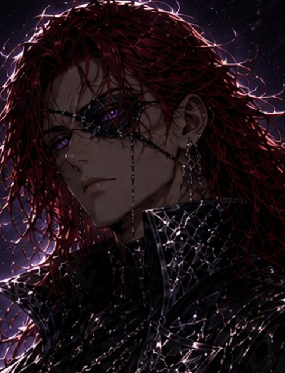

Timeline
The two clocks of the Twilight Order: the Deep Timeline before the present, and the Story Spine measured in chapters.

From the Closed Curtains to the Second Twilight
Scroll from the oldest age to the present. Story events are hidden until you choose to reveal the book you've reached.
Age IBefore Record
- The Closed CurtainsThe realms grow apart behind the Veil. Magic, beasts, dragons and spirits are older than Heaven's rule.
- First Elohim ContactThe Elohim discover that mortal Anima can go beyond the limits Heaven thought were fixed.
- The First Celestial SchismHeaven divides over who should own that power.
- The First War in HeavenThe disagreement becomes open war, before any mortal record.
- The Covert Intervention AgePossession, hidden contracts, blood oaths and the first Sentinels spread across the realms.
- Passage OpensTravel between realms becomes public, bringing trade, migration and conquest.
- The Three Who Chose TomorrowAshael, Aurethiel and Kyriel reject celestial ownership and make the Seed Covenant.
- First Signs of PestilenceFailed blessings and Veil wounds pile up into something that adapts.
- The Great ShiftThe Kynari and Saurai become peoples who pass their gifts down through birth.
Age IIThe Great War
- The Age of Sentinels and TitansSentinels carry Heaven's mandates while Titans anchor celestial power inside mortal reality.
- The War of AscensionMortals join Heaven's war: Demigods, Kynari, Saurai, beasts, Titans and Ascendants clash.
- The Wars of Forced InheritanceForced blood-merging, Titan grafts and dragon harvesting spread.
- The Twilight OverlapUnder the Bleeding Sky, gates, Titans, Elohim and Pestilence collide.
- The Fall of HeavenElohim, Sentinels and Titans die in the mortal world, and their remains become spoils of war.
- Titanfall: The Forging AgeFallen Titans become land, relics and bloodline fragments.
Age IIIRestoration and Eclipse
- The Restoration CovenantSurvivors tear down the Titan forges and free war-bred creatures.
- The First Eclipse WarAhk Ra, the Walking Star, reaches Heaven's level without permission.
- The First TwilightAfter Ahk Ra falls, four Elohim stop the Fallen from harvesting the dead. Open war becomes hidden war, and the first roadkeepers appear.
Age IVThe Long Peace
- The Long PeaceThe old world fades into myth while hidden wars continue underneath.
- Rise of the Black HousesFallen influence seeps into mortal dynasties.
- The Gilded Jackals ConsolidateA mission of protection drifts toward ownership.
- Red AutumnPestilence learns to feed on identity and on the bonds between people and beasts.
- The Pale ChoirThe Lunari close their Hollows rather than turn grief into a weapon.
- The Crimson DivideThe Blood Sovereigns split over blood, authority and freedom.
- The Vael'Thyr CollapseA great civilization sinks beneath the Veil.
- The Age of ConcealmentAncient bloodlines hide as ordinary families.
- The Nomad Alliance MaturesRoadkeepers, healers and rescuers form a lasting institution.
- The Hidden War IntensifiesThe Long Peace turns out to be an age of concealed war.
Age VThe Eclipse Heir
Spoilers from Core: The Children of Broken Houses (tap to reveal)
- Khari, the Man Who Returned WholeKhari walks into a Crimson Veil and comes back with himself intact.
- Amara, the Mother of AshAmara's quiet Ashen power proves stronger than domination.
- The Meeting That Was Not ForetoldSun and Moon meet by choice, not prophecy.
- Riven Is BornBorn in the last week of autumn.
- Four Seconds of BlueAt eleven months, Riven releases a blue pulse that relics and bloodlines answer.
- The Nine DaysKhari holds a crossing for nine days so others can escape.
- The Mother of AshAmara carries the infant on the road: the mill, the Frost Fang watchtower, Sangria's hall, and home by winter.
- The Children of Broken HousesRiven's childhood, ages 0 to 9.
Age VIThe Second Twilight
Spoilers from Echo: The Phoenix Years (tap to reveal)
- The Phoenix YearsRiven, aged 10 to 16: his first kill, and the crew begins to form.
- Five NamesFive young fighters find each other. No banner yet.
Origin books that lead into Echo: The Stories of Sangria (Kaisel), The Road Holds (Gingey), Kennel Property (Vaughn), Draw What Is (Scribs and Elara) and The Missing Piece (the Avant-Guarde).
Spoilers from Horizon: The Flower and the Hunt (tap to reveal)
- The Flower and the HuntRiven, aged 16 to 19, through to Eclipse.
- Cell 9 CertifiedAt 19, the Nomads certify Cell 9: Riven, Arelion, Scribs and Vaughn.
Origin book that leads into Horizon: Bloom Under Ice (Yahia and Amelia).
Spoilers from The Second Collection (tap to reveal)
- The Fair CopyRiven is 20, four months after the trilogy. The Veyr sisters.
- The Reed and the RingIxtli enters, and the sisters are taken.
- Past the StairThe Black Houses, and the trigger.
The story continues. Want the full detail? Explore the deep-history archives below.
Go deeper
These characters are born centuries — sometimes eons — apart, yet they all arrive at one street in one present. To keep a coherent timeline, the codex runs on two clocks
Read top to bottom as "long ago → almost now." The final band is the 22-year window that produced the present-day team, all cresting within months of Chapter 1.

Eleven prequel novels, from the Void before the first star to the night the capital rang · October 16, 2026